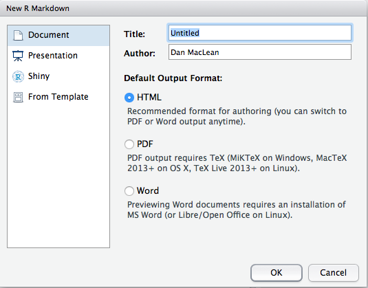

5 RMarkdown for Reproducible Publishable Plots
5.1 About this chapter
- Questions:
- How can I design a plot once and use it for many experiments?
- Objectives:
- Use RMarkdown documents to build a plot.
- Keypoints:
- Reproducible work is good work.
- R Markdown can helps us be reproducible and transparent
5.2 Being lazy is a virtue. Work hard to be lazy.
Writing reproducible code will save you time and effort. Computers are especially good at carrying out commands and if you are smart enough to put those commands in an executable document, rather than run the whole thing by hand every time, you’ll save time, you can ensure that you’ll do the same thing everytime and those who look at your work later will be absolutely clear about what you did.
Of course, this takes a little bit more effort up front, but it will pay off. And R Studio has plenty of ways to help you do just this. R Markdown documents are one such way. For the rest of this course we’ll be putting our code into R Markdown.
5.3 R Markdown
Markdown is a way of adding little tags to text, to define parts of the structure of it, so that when a file written in Markdown is sent to a program that knows how to interpret it, the program can render the text as you intended.
R Studio has the ability to take a document written in Markdown, squeeze R code into it and produce the output in a pretty format. The flavour is called R Markdown. By combining this with our plotting knowledge, we can make a dynamic document that can be re-run every time we get a new dataset.
You can find more information on R Markdown in this handy cheat sheet https://www.rstudio.com/wp-content/uploads/2015/02/rmarkdown-cheatsheet.pdf
5.3.1 A new R Markdown document
Creating an R Markdown document is easy. In R Studio, use the menu File -> New File -> R Markdown and you’ll get a dialogue box like

Leave everything as default (making a document with output format html) and click OK. A new panel should appear in R Studio. The header looks like:
---
title: "Untitled"
author: "Dan MacLean"
date: "21 September 2020"
output: html_document
---The top four lines are metadata about the document, R will use this to make an automatic header. You can change the values of title, author and date if you like. The last bit about output defines the type of document you can get.
The rest of the document is straightforward text right up to the parts with the three backticks ‘```’ (weird quote things). These are the blocks of R code that will get evaluate in our R markdown. Anything between two sets of three backticks is sent to R and treated as R code, so that
```{r cars}
summary(cars)
```
Gets the output of the summary() function in that position. To see this work, click the Knit HTML button and choose a filename for the R markdown document.
The eventual document produced is nicely formatted markdown with R code and results added in the proper place.
Markdown provides a rich set of tags to mark up the document to make it look as pretty as you like. Here’s a cheat-sheet you can use to make your own Markdown documents https://github.com/adam-p/markdown-here/wiki/Markdown-Cheatsheet
See also the course here https://danmaclean.github.io/literate_computing
5.4 Quiz
- Make a new R Markdown document that creates and renders a plot of your choice - any of the ones you’ve already done will be fine. Hint: Every time you run a markdown document the computer’s memory is cleared for that document, it doesn’t know about what goes on outside of the document. You need to load libraries and files in the document, even if they are loaded in R Studio already